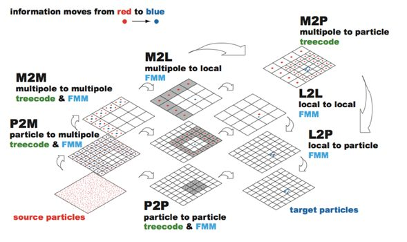
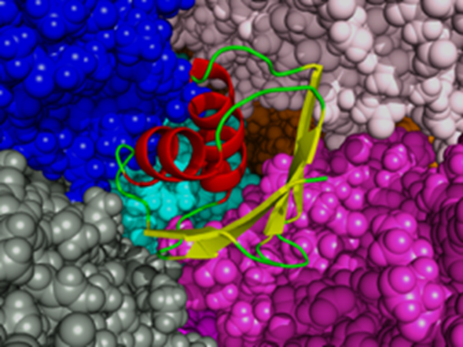
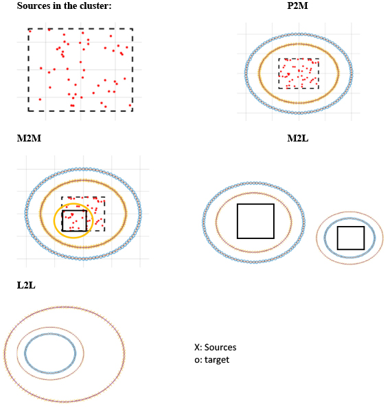
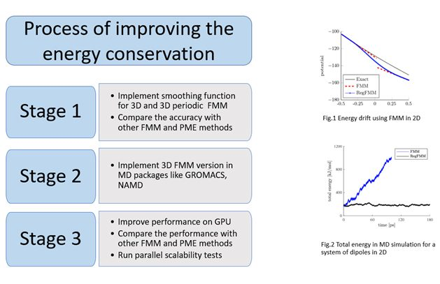

N体問題
N体問題は重力多体問題や分子動力学などの物理現象自体が離散的な点の相互作用で記述される分野で盛んに用いられてきた。しかし、N体問題の解法は弾性力学、流体力学、電磁気学、音響学、量子力学などの数値解析にも用いることができる。これは連続体を記述する偏微分方程式を積分方程式に変換し求積点を用いて積分を行うことで離散点同士の相互作用問題に帰着するためである。そのため、N体問題の高速解法は科学技術計算において欠かすことのできないアルゴリズムであるといえる。

N体問題は重力多体問題や分子動力学などの物理現象自体が離散的な点の相互作用で記述される分野で盛んに用いられてきた。しかし、N体問題の解法は弾性力学、流体力学、電磁気学、音響学、量子力学などの数値解析にも用いることができる。これは連続体を記述する偏微分方程式を積分方程式に変換し求積点を用いて積分を行うことで離散点同士の相互作用問題に帰着するためである。そのため、N体問題の高速解法は科学技術計算において欠かすことのできないアルゴリズムであるといえる。
The fast multipole method (FMM) is a fast algorithm that reduces the complexity of the N-body problem from O(N2) to O(N). It is widely regarded as one of the top 10 algorithms in scientific computing, along with FFT and Krylov subspace methods. It is quite common that algorithms with low Byte/flop (dense linear algebra) have high complexity O(N3), and algorithms with low complexity (FFT, sparse linear algebra) have high Byte/flop. The FMM has an exceptional combination of O(N) complexity and a Byte/flop that is even lower than matrix-matrix multiplication. In other words, it is an efficient algorithm that is compute bound, which makes it an interesting alternative algorithm for many elliptic PDE solvers, on architectures of the future that will most likely have low Byte/flop.

図１ FMMの計算の流れ
Coulomb Interactions govern the dynamics of molecules and is the most expensive part of classical molecular dynamics simulations. Particle mesh Ewald (PME) and its variants such as Gaussian splitting Ewald (GSE) are efficient methods for calculating lattice sums with periodic boundary conditions. Although, these lattice sum methods are accurate for periodic systems such as crystals, they suffer from long-range correlation artifacts and anisotropy effects for noncrystalline systems such as cellular environments. Another disadvantage of PME is its scalability, since it requires a large amount of global communication due to the nature of the FFT. It is difficult to even achieve weak scaling (not to mention strong scaling) for a large number of CPUs with full electrostatics. On the other hand, fast multipole methods (FMMs) can reduce the amount of communication in long-range interactions to O(log p), where p is the number of processes.

KIFMM is a technique that was developed to speed up the calculation of long-ranged forces in the n-body problem from O(N2) to O(N). It doesn’t requires expanding the system green’s function using a multipole expansion like the classical FMM and it is based only on kernel evaluations.
Instead of using analytic expansions to represent the potential generated by sources inside a box of the hierarchical FMM tree like classical FMM, we use a continuous distribution of an equivalent density on a surface enclosing the box. To find this equivalent density we match its potential to the potential of the original sources at a surface, in the far field, by solving local Dirichlet-type boundary value problems. The far field evaluations are sparsified with singular value decomposition in 2D or fast Fourier transforms in 3D. Its advantage is the (relative) simplicity of the implementation.

Currently I am working on implementing a GPU scalable version of KIFMM.
https://github.com/exafmm/exafmm-t/tree/gpuMolecular dynamics simulation is common technique for studying the movements of atoms and molecules and can be described as a type of N-body system, a problem that can be solved by Fast Multipole Method. FMM is one of the fastest algorithms and it decreases the computational cost to O(N). Although FMM is considered to be a of a great importance in MD simulations, often during the simulation it can be observed a large energy drift caused by jump in the potential when particles move from one cell to another in the FMM hierarchical tree. The energy conservation is one of the parameters commonly used to describe the stability of MD simulation and the purpose of this research is implementing a regularization technique that will reduce the energy drift by smoothing the potential and obtain good energy conservation of the FMM for MD simulations.
